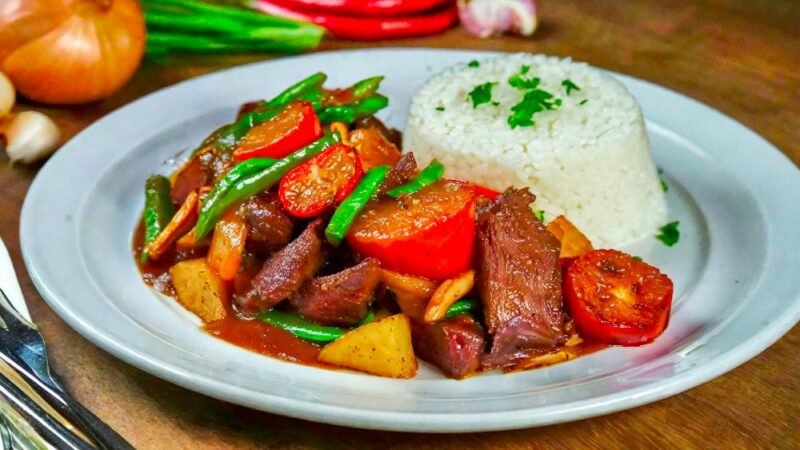

PREPARACIÓN
LECHE ASADA
Ingredientes
| Cantidad | Ingrediente |
|---|---|
| 1 | litro de leche entera |
| 1 taza | de azúcar |
| 4 | huevos |
| cantidad necesaria | Esencia de vainilla |
Paso a Paso
- Precalentar el horno a 180°C. En una olla calentar la leche a fuego medio hasta que esté tibia. En un bol aparte, batir los huevos con el azúcar hasta obtener una mezcla homogénea.
- Verter la leche tibia sobre la mezcla revolviendo constantemente para evitar la formación de grumos.
- Agrega esencia de vainilla a gusto.
- Colar la mezcla para eliminar posibles grumos y verter en un molde para horno caramelizado.
- Para caramelizar el molde, derretir 1/2 taza de azúcar en una sartén hasta obtener un caramelo dorado y verter rápidamente en el molde.
- Colocar el molde en una fuente para horno más grande y agregar agua caliente hasta que alcance la mitad del molde.
- Hornear 60-70 minutos. Retirar del horno y dejar enfriar a temperatura ambiente. Luego, refrigerar por al menos 4 horas antes de desmoldar.
Charquicán
Ingredientes
| Cantidad | Ingrediente |
|---|---|
| 500 g | carne de res (puede ser posta, ganso o similar), cortada en trozos |
| 1 taza | de charqui desmenuzado |
| 4 | papas medianas, peladas y cortadas en cubos |
| 2 | zanahorias, peladas y cortadas en rodajas |
| 1 taza | choclo (maíz) fresco o congelado |
| 1 | calabacín, cortado en cubos |
| 1 | cebolla, picada |
| 2 | dientes de ajo, picados |
| 1 cucharadita | comino |
| 1 hoja | laurel |
| cantidad necesaria | Sal y pimienta a gusto |
| cantidad necesaria | Aceite de cocina |
| 4 tazas | Caldo de verduras o agua (aproximadamente ) |
Paso a Paso
- En una olla calentar un poco de aceite y dorar la carne a fuego medio. Luego agregar el charqui.
- Añadir la cebolla y el ajo para cocinarlos hasta que estén dorados. Incorporar revolviendo las papas, zanahorias, choclo y calabacín para que se mezclen bien.
- Agregar el comino, sal, pimienta y la hoja de laurel. Verter el caldo de verduras o agua suficiente para cubrir los ingredientes y llevar a ebullición.
- Reducir el fuego a bajo, tapar la olla y cocinar a fuego lento unos 30-40 minutos o hasta que las verduras estén tiernas. Rectificar sabores y servir caliente.
Gohan
Ingredientes
| Cantidad | Ingrediente |
|---|---|
| 2 tazas | arroz japonés de grano corto |
| 2 1/2 tazas | agua |
| cantidad necesaria | Vinagre de arroz |
| cantidad necesaria | Azúcar |
| cantidad necesaria | Sal |
Paso a Paso
- Colocar el arroz en un recipiente y enjuagar bajo agua fría hasta que el agua salga clara. Esto ayuda a eliminar el exceso de almidón y mejora la textura del arroz.
- Colocar el arroz y el agua en una arrocera o cacerola. Cocinar hasta que el arroz esté tierno y haya absorbido el agua.
- Después de cocinar, dejar reposar el arroz tapado unos 10 minutos. Esto completa el proceso de vaporización y mejora la textura.
- Mezclar una pequeña cantidad de vinagre de arroz, azúcar y sal y calentarlo ligeramente. Agregar el arroz cocido revolviendo despacio.
Mote de queso

Ingredientes
| Cantidad | Ingrediente |
|---|---|
| 1 kg | ñame fresco |
| 250 gr | queso salado |
| 3 | dientes de ajo |
| 1 | cebolla mediana |
| 1 | taza de suero (crema agria) |
| 1 | limones |
| cantidad necesaria | Agua |
| cantidad necesaria | Sal y pimienta a gusto |
Paso a Paso
- Pelar el ñame y cortarlo en trozos medianos. En una olla grande, agregar suficiente agua para cubrir el ñame y llevar a ebullición. Cocinarlo a fuego medio-alto durante aproximadamente 40 minutos o hasta que esté tierno. Escurrir y reservar.
- En una sartén a fuego medio, agregar un poco de aceite y saltear el ajo picado y la cebolla finamente picada, hasta que estén dorados.
- Incorporar el ajo y la cebolla a la olla con el ñame. Revolver ligeramente y dejar cocinar alrededor de 15/20 minutos.
- Añadir el queso salado cortado en trozos y revolver un poco para integrar los sabores.
- Incorporar el suero (crema agria) y el jugo del limón a la mezcla.
- Cocinar todos los ingredientes a fuego bajo durante 10 minutos más. Salpimentar y disfrutar caliente.
Chorrillana Chilena
Ingredientes
| Cantidad | Ingrediente |
|---|---|
| 4 | papas medianas |
| 500 gr | carne de res (lomo o similar) |
| 2 | cebollas grandes |
| 4 | huevos |
| cantidad necesaria | Aceite para freír |
| cantidad necesaria | Sal y pimienta a gusto |
| cantidad necesaria | Salsa de tomate o kétchup |
| cantidad necesaria | Mayonesa |
| cantidad necesaria | Ají |
Paso a Paso
- En una sartén calentar suficiente aceite y freír las papas peladas y cortadas en bastones. Retirar y colocar sobre papel absorbente.
- Cortar la carne en tiras delgadas. En la misma sartén usada anteriormente cocinar la carne hasta que esté dorada. Salpimentar a gusto.
- Pelar y cortar las cebollas en tiras. Agregar al sartén y saltear hasta que estén tiernas y caramelizadas.
- En un plato colocar una capa de papas fritas. Distribuir las tiras de carne por encima y luego las cebollas.
- Freír los huevos y colocarlos sobre la mezcla. Añadir ají y salsa de tomate o kétchup a gusto sobre el plato o en recipientes aparte.
Tomaticán Chileno
Ingredientes
| Cantidad | Ingrediente |
|---|---|
| 500 gr | carne de vacuno (cortada en trozos pequeños) |
| 400 gr | granos de maíz, escurridos |
| 4 | tomates maduros, pelados y picados |
| 2 | cebollas, picadas |
| 2 | dientes de ajo, picados |
| 2 | papas, peladas y cortadas en cubos |
| 1 | cucharadita comino |
| 1 | cucharadita orégano |
| cantidad necesaria | Sal y pimienta a gusto |
| cantidad necesaria | Aceite de oliva |
| cantidad necesaria | Perejil fresco para decorar |
| cantidad necesaria | Tomaticán en 3 pasos fáciles |
Paso a Paso
- En una olla con un chorrito de aceite, cocinar la carne a fuego medio hasta que dore. Agregar las cebollas y el ajo, cocinar hasta que estén transparentes.
- Incorporar los tomates picados, las papas y los granos de maíz escurridos. Condimentar con el comino, el orégano, la sal y la pimienta a gusto.
- Reducir el fuego a bajo, tapar la olla y cocinar 30-40 minutos. Una vez que la carne esté tierna y los sabores se hayan mezclado, servir caliente decorado con perejil fresco.
Carne Mongoliana
Ingredientes
| Cantidad | Ingrediente |
|---|---|
| 3 cucharadas | alsa de soja |
| 2 cucharadas | ceite vegetal |
| 1 cucharada | engibre fresco, rallado |
| 3 | ientes ajo, picados |
| 2 cucharadas | zúcar |
| 1 cucharada | inagre de arroz |
| 500 gr | de res (puede ser solomillo), cortada en tiras finas |
| 4 | ebollas verdes, cortadas en trozos |
| 1 taza | e arroz cocido (puede ser arroz blanco o integral) |
| cantidad necesaria | emillas de sésamo para decorar |
Paso a Paso
- Colocar las tiras de carne en un bol con salsa de soja. Marinar 30 minutos para permitir que la carne absorba los sabores.
- En un bol pequeño, combinar el jengibre rallado, el ajo picado, el azúcar y el vinagre de arroz mezclando bien para formar la salsa.
- Calentar el aceite en una sartén o wok a fuego alto. Agregar la carne marinada y cocinar hasta que esté dorada por todos lados. Retirar y reservar.
- En la misma sartén saltear las cebollas verdes hasta que estén tiernas pero aún crujientes.
- Volver a agregar la carne a la sartén y verter la salsa por encima. Cocinar por unos minutos hasta que la salsa se haya espesado. Servir sobre arroz cocido y espolvorear con semillas de sésamo.
Lomo saltado
Ingredientes
| Cantidad | Ingrediente |
|---|---|
| 500 gr | lomo de res, cortado en tiras |
| 2 cucharadas | aceite vegetal |
| 1 | cebolla roja, cortada en tiras |
| 1 | tomate, sin piel y sin semillas, cortado en tiras |
| 1 | pimiento rojo, cortado en tiras |
| 1 | pimiento amarillo, cortado en tiras |
| 2 cucharadas | salsa de soja |
| 1 cucharada | vinagre de vino tinto |
| 2 | dientes de ajo, picados |
| 1 cucharadita | jengibre, rallado |
| cantidad necesaria | Ají amarillo al gusto, picado |
| cantidad necesaria | Perejil fresco, picado, para decorar |
| cantidad necesaria | Sal y pimienta a gusto |
Paso a Paso
- En una sartén o wok, calentar el aceite a fuego alto. Agregar las tiras de lomo de res salpimentadas y cocinar hasta que la carne esté dorada por todos lados. Retirar de la sartén y reservar.
- En la misma sartén agregar la cebolla, el tomate, los pimientos y saltear unos minutos. Incorporar el ajo, el jengibre y el ají amarillo. Revolver bien.
- Volver a agregar la carne y verter la salsa de soja con el vinagre de vino tinto. Mezclar todo cuidadosamente.
- Cocinar por unos minutos más hasta que la carne esté en su punto. Rectificar los sabores y servir el lomo saltado espolvoreado con la hierba fresca picada.
Arroz con coco
Ingredientes
| Cantidad | Ingrediente |
|---|---|
| 2 tazas | arroz |
| 2 tazas | leche de coco |
| 4 tazas | agua |
| cantidad necesaria | Sal a gusto |
| Opcionales: | almendras fileteadas, coco rallado, pasas de uva. |
Paso a Paso
- En una olla, calentar la leche de coco y dejar reducir hasta que se forme una textura caramelizada.
- Agregar las dos tazas de agua y la sal. Hervir y agregar el arroz.
- Cocinar a fuego lento hasta que el arroz esté cocido y absorba los líquidos. Dejar reposar unos minutos y servir caliente, si se desea decorar con almendras fileteadas, coco rallado o pasas de uva por encima.